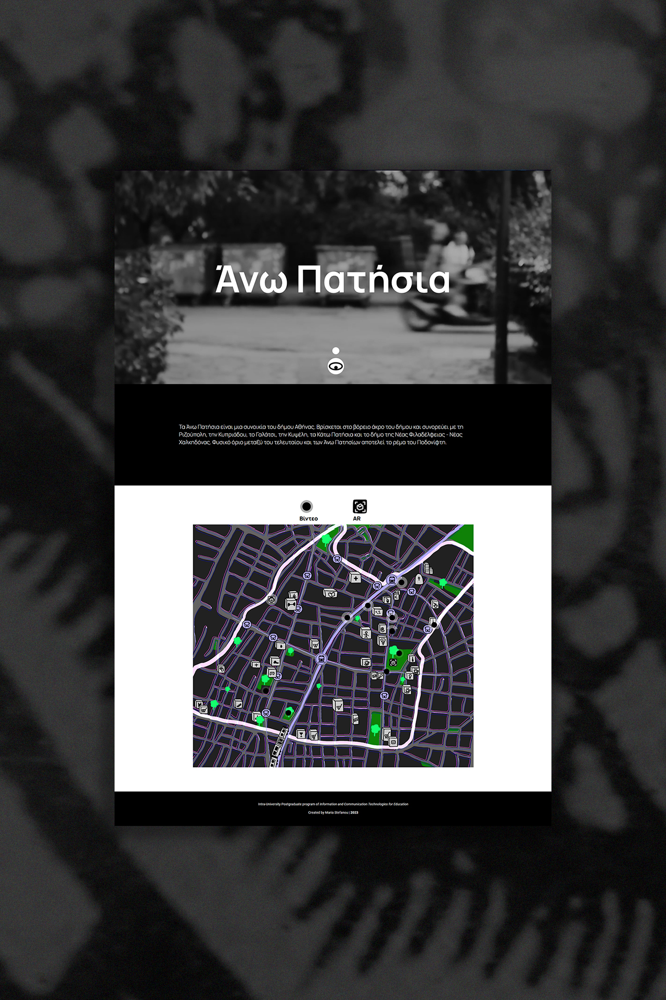
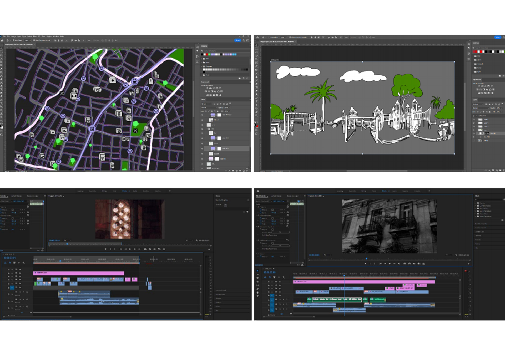

During my time at the postgraduate program "Information and Communication Technologies in Education", I had the opportunity to create a website that contains an abstract rendering of the map of the area, revealing at the same time its daily life. A series of short videos presents various points of interest of the neighborhood with personal testimonies and historical facts. Meanwhile, a network of points has been created in real space, where the resident or visitor could discover elements of Augmented Reality (AR).

The subject of this thesis was the presentation of the characteristics of the Ano Patisia area of Athens and the creation of a website with digital, audio-visual and hybrid representations of the history and the daily life of the area. The work aimed to capture this urban space and at the same time raise questions of cultural and environmental nature, with reference to the utilization of preserved buildings and the existence of green spaces.

The programs and tools that were used are: Photoshop, Premiere Pro, Visual Studio Pro, Github, BlippAR, linktr.ee, Blender and Vimeo.